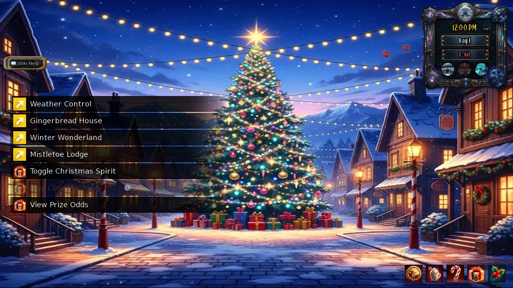
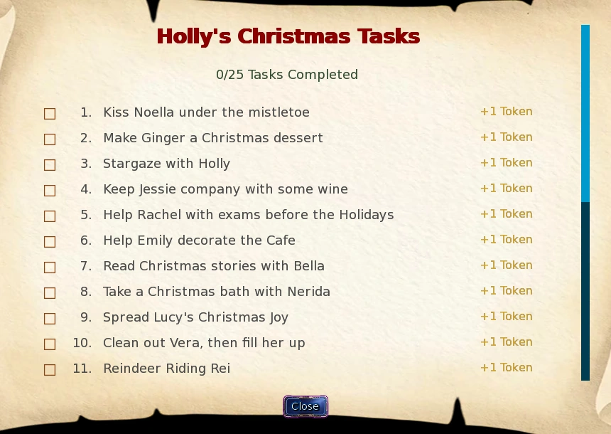
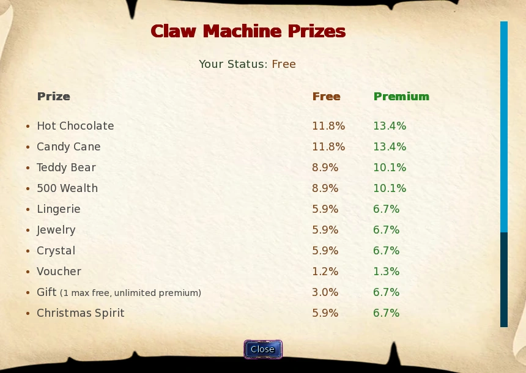
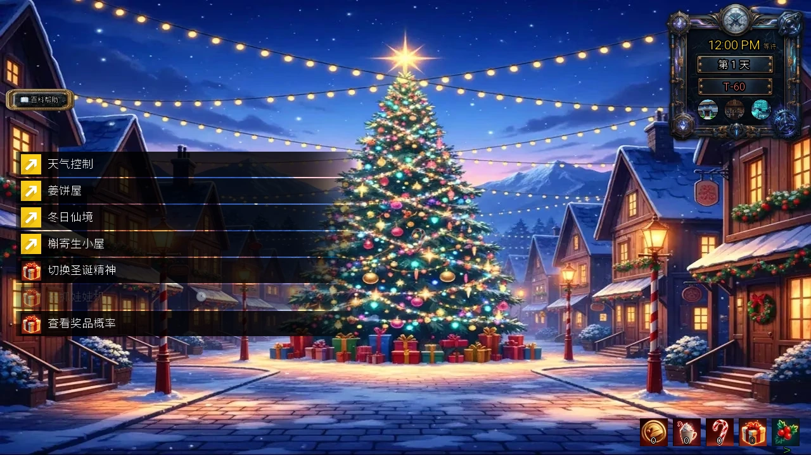
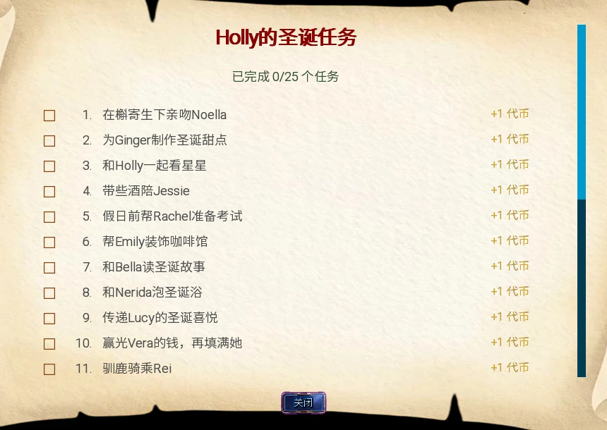
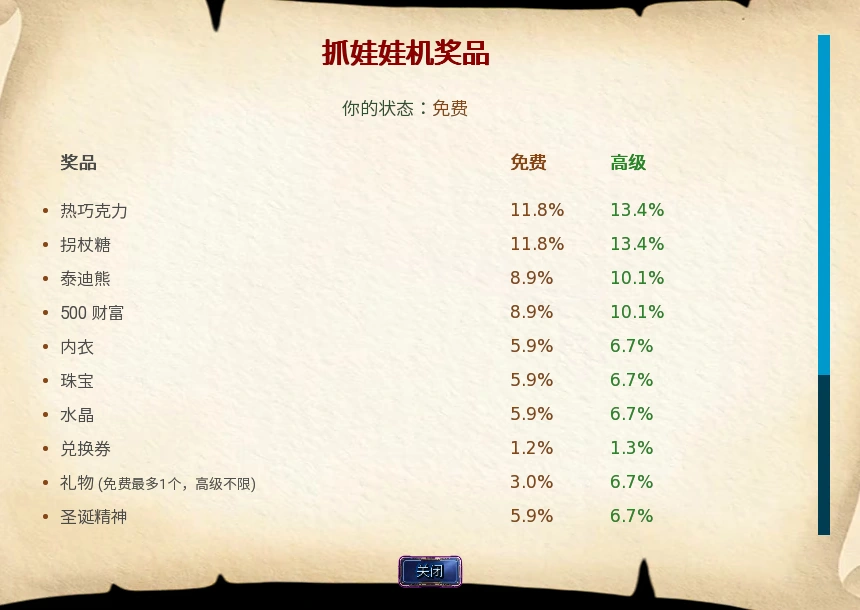

Select a screenshot to enlarge it. Screens show example inventories and progress.
Start Christmas activities
Christmas Village is a year-round event hub in the Future. Travel to Future → Fringe Zone → Weather Control → Christmas Village. Its entrance and travel between the village buildings cost no game time. The village does not require a particular calendar date, relationship stage or redemption code.
Turn Christmas ON through the village’s Toggle Christmas Spirit action or the Christmas switch in Relationships. This enables the scattered Candy Canes and seasonal activities. Turning it off keeps your stock and stops map pickups and seasonal task checks. Village travel, ordinary resident interactions, cane trades and the claw machine remain available; their own item and Token costs still apply. The separate Christmas-icon display option hides the HUD; it is not the event switch.
For a first visit: collect the village Candy Cane, meet Ginger in Gingerbread House, Holly in Winter Wonderland and Noella in Mistletoe Lodge, then check Holly’s task list. Save Tokens until you have checked the current claw-machine odds. All three residents are present all day.
Weather Control is the map button; entering it opens Sky-Level Atmospheric Management Station, where the onward routes are listed.

Resources and Candy Cane collecting
| Resource | How to obtain it | Main use |
|---|---|---|
| Candy Cane | Click scattered canes; also a claw prize | Trade 10 to Ginger for 1 Token |
| Token | Introduction, tasks, milestones and cane trades | 1 Token per claw play |
| Gift | Claw-machine prize | One special Christmas gift per eligible recipient |
| Hot Chocolate | Claw-machine prize | Give to a Christmas resident to develop the relationship |
| Coal | Conditional claw prize | Tracked separately; not a substitute for Tokens or Candy Canes |
Each visible cane gives one Candy Cane immediately without advancing time. That same location respawns its cane two in-game days after collection. This is a separate timer for each location, not a real-time countdown or a daily refill of every cane. Enable Christmas and the icon display if you cannot see a cane.
Ginger’s Trade Candy Canes costs 10 canes, gives 1 Token and +10 base relationship, and takes no time. There is no daily trade allowance. Trades also advance her lifetime-canes-given milestones; because you trade in tens, the listed 25 and 75 milestones first become reachable at 30 and 80.
All 23 Candy Cane locations
Open the complete collecting checklist
| Era | District | Location |
|---|---|---|
| Present | Uptown | Local Café (Interior) |
| Present | Uptown | City Beach (Uptown) |
| Present | Uptown | Kitchen |
| Present | Uptown | Corner Convenience Store |
| Present | Uptown | Hidden Waterfall |
| Present | Downtown | Mystic Curiosities Shop |
| Present | Downtown | Back Alley |
| Present | Downtown | Food Court (Mall) |
| Present | Downtown | Downtown Park |
| Present | Downtown | Downtown Restaurant |
| Medieval | Village Outskirts | Wizard's Interior |
| Medieval | Village Outskirts | Caravan Rest Stop |
| Medieval | Village Outskirts | Traveler's Inn Tavern |
| Medieval | Village Outskirts | Village Healer's Hut |
| Medieval | Kings Demesne | Merchants Quarter |
| Medieval | Kings Demesne | Grand Bazaar |
| Medieval | Kings Demesne | Tournament Grounds |
| Medieval | Kings Demesne | Acrobat Training Hall |
| Future | Prime Sector | Underground Modification Clinic |
| Future | Prime Sector | VOID Consumer Fulfillment Center |
| Future | Prime Sector | NutriMax Optimization Plaza |
| Future | Fringe Zone | Christmas Village |
| Future | Fringe Zone | Mistletoe Lodge |
Several locations have their own ordinary opening hours or access requirements. A cane does not bypass a locked building. Collect along routes you already use rather than paying travel time only for a single cane.
Residents and relationship milestones
| Action | Minimum stage | Time | Item cost | Base gain | Daily allowance |
|---|---|---|---|---|---|
| Talk | Stranger | 25 min | None | +1 | 7 |
| Give Chocolate | Acquaintance (50) | 20 min | 1 Chocolate | +3 | 7 |
| Give Hot Chocolate | Known (25) | 20 min | 1 event Hot Chocolate | +10 | 80 |
These are the shared actions of Ginger, Holly and Noella; Tinsel has the same three actions after her tavern becomes available. Relationship modifiers still apply. Stay within the allowance: repeating an exhausted action can give an annoyed response and a relationship loss. Event Hot Chocolate is tracked in the Christmas HUD, separately from ordinary Chocolate.
The Christmas Spirit skill doubles the applicable ordinary relationship calculation for these four Christmas characters; their favorite-stat bonuses can help as well. It does not double every Token reward or a fixed task payout.
Favorite stats and milestone reference
| Resident | Favorite stats |
|---|---|
| Ginger | Charm 50, Perception 50, Stamina 70 |
| Holly | Perception 50, Stamina 50, Mystic 40 |
| Noella | Intelligence 50, Creativity 50, Cooking 45 |
Each of the three original residents has one automatic conversation at Known, Acquaintance, Friend, Close Friend, Crush, Romantic, Intimate and In Love. Visit the resident’s home after meeting the threshold. The first seven grant 1 Token each; In Love grants 2, for 9 Tokens per resident. The introduction grants 1 Token. Fixed milestone Token rewards are claimed once; replaying a scene is not a Token farm.
Holly’s 25 tasks
Click the task-list icon at the right end of the Christmas resource HUD to open Holly’s checklist. Each task is completed once: tasks 1–24 give 1 Token each and task 25 gives 3, for 27 Tokens from the tasks themselves. Some actions appear at another character’s usual location and require that building to be open. Keep Christmas ON. Several later tasks also require the corresponding additional-content access.
Five completed tasks unlock Holly’s first task milestone; further milestones are at 10, 15, 20 and 25. Visit Winter Wonderland to collect the conversations: their Token rewards are 1, 1, 1, 1 and 2. Ginger’s cumulative-cane milestones similarly award 1, 1, 1, 1 and 2 Tokens at the listed 25, 50, 75, 100 and 150 thresholds.
The dungeon task sequence is 18 → 19 → 20 → 25. Start by searching the Present Downtown Back Alley. The follow-ups become eligible on floor 18+, floor 21+ and floor 23+, in that order. Their conditional encounter checks are 40%, 40% and 50%; these are not guaranteed chances per step, and the final step requires winning its boss battle. The checklist is the safest place to track which step is next.

Task requirements reference
Open all 25 tasks and practical requirements
| # | Checklist task | Where | Requirement | Time | Reward |
|---|---|---|---|---|---|
| 1 | Kiss Noella under the mistletoe | Mistletoe Lodge | Noella Known (25+) | 5 min | +1 Token, +5 Noella |
| 2 | Make Ginger a Christmas dessert | Gingerbread House | Ginger Romantic (800+) | 15 min | +1 Token, +20 Ginger |
| 3 | Stargaze with Holly | Winter Wonderland | Holly Friend (100+), 20:00–04:00 | 15 min | +1 Token, +10 Holly |
| 4 | Keep Jessie company with some wine | Jessie's Room | Jessie Close Friend (200+), 1 Wine | 30 min | +1 Token, +10 Jessie |
| 5 | Help Rachel with exams before the Holidays | University Hall | Rachel Romantic (800+) | 30 min | +1 Token, +10 Rachel |
| 6 | Help Emily decorate the Cafe | Local Café (Interior) | Emily Friend (100+); café must be open | 20 min | +1 Token, +5 Emily |
| 7 | Read Christmas stories with Bella | City Library (Uptown) | Bella Friend (100+) | 20 min | +1 Token, +10 Bella |
| 8 | Take a Christmas bath with Nerida | Tranquil Spa, Royal Hot Springs, or Virtual Wellness Immersion Center | Nerida Friend (100+), 20:00–04:00 | 30 min | +1 Token, +10 Nerida |
| 9 | Spread Lucy's Christmas Joy | Dance & Yoga Studio | Lucy Crush (400+), 12:00–17:00 | 30 min | +1 Token, +10 Lucy |
| 10 | Clean out Vera, then fill her up | Downtown Bar → Play Table Games → Hold'em | Reduce Vera's current $2,500 poker bankroll to 0 | 5 min/hand | +1 Token, +20 Vera |
| 11 | Reindeer Riding Rei | Retro Arcade | Rei Crush (400+), 15:00–22:00 | 30 min | +1 Token, +20 Rei |
| 12 | Receive Christmas Gift from Jade and Sophie | Brothel Master Bedroom | Jade and Sophie active workers, both Crush (400+), 18:00–03:00 | 30 min | +1 Token, +15 each |
| 13 | Give Lyra Reindeer Antlers | Medieval Village Market | Lyra Known (25+), 06:00–21:00 | 25 min | +1 Token, +10 Lyra |
| 14 | Spread Holiday Cheer to Hailey | Medieval General Goods Store | Hailey Known (25+), 06:00–21:00 | 10 min | +1 Token, +10 Hailey |
| 15 | Receive Christmas Gift from Elara | Brothel Master Bedroom | Elara active worker, Elara Crush (400+), 18:00–03:00 | 30 min | +1 Token, +15 Elara |
| 16 | Catch the Christmas Elf in the Brothel Bar | Brothel Bar | Own/access the brothel, 21:00–23:00 | 15 min | +1 Token |
| 17 | Catch the Late Night Elf in the Brothel Bar | Brothel Bar | Own/access the brothel, 01:00–03:00 | 15 min | +1 Token |
| 18 | Search the Back Alleys for the Stranded Elf | Present Downtown Back Alley → Search | Christmas ON; repeat Search until the event is selected | Search action | +1 Token |
| 19 | Collect Tinsel from deep in the dungeon | Dungeon floor 18+ | Task 18 complete, Christmas ON; 40% eligible check | Encounter | +1 Token |
| 20 | Find Tinsel deeper in the dungeon | Dungeon floor 21+ | Task 19 complete, Christmas ON; 40% eligible check | Encounter | +1 Token |
| 21 | Teach Foxy about Christmas | Medieval Forest Clearing | Foxy Friend (100+), 21:00–24:00 | 30 min | +1 Token, +10 Foxy |
| 22 | Spread Holiday Cheer to Becky | Present Police Station | Becky Acquaintance (50+), 08:00–18:00 | 30 min | +1 Token, +10 Becky |
| 23 | Sing Christmas Carols with Sandra | Medieval Bards Guild | Sandra Acquaintance (50+), 13:00–18:00 | 30 min | +1 Token, +10 Sandra |
| 24 | Give the Resistance Some Holiday Spirit | Future Underground Resistance Hideout | Ghost Known (25+), 13:00–23:00 | 30 min | +1 Token, +10 Ghost |
| 25 | Save Tinsel from Krampus | Dungeon floor 23+ | Task 20 complete, Christmas ON; 50% eligible check; defeat Krampus | Boss encounter | +3 Tokens |
All relationship amounts in this reference are base rewards. Task 10 uses Vera’s holiday Hold’em variant with wild Jokers and her current daily poker bankroll. It belongs to the Downtown Bar, not Tinsel Tavern. See Bar Games for betting controls and bankroll rules.
Claw machine: costs, odds and rewards
Play Claw Machine costs 1 Token and 5 minutes. The result is random; the animation has no aiming or timing control. View Prize Odds is free and takes no time. Its actual access columns are labelled Free and Premium; use your displayed status rather than assuming an XP tier changes it.
The pool changes when a unique reward is removed or an eligible employee’s clothing quota is exhausted. Each eligible employee contributes a separate clothing entry. A weight is a relative share of the current total, not a fixed percentage. For example, removing a won Wreath changes the chances of all remaining prizes.
Full current prize pool and weights
| Prize | Weight: Free / Premium | Result or limit |
|---|---|---|
| Hot Chocolate | 20 / 20 | +1 event Hot Chocolate |
| Candy Cane | 20 / 20 | +1 Candy Cane |
| Teddy Bear | 15 / 15 | +1 ordinary Teddy |
| Lingerie | 10 / 10 | +1 ordinary Lingerie |
| Jewelry | 10 / 10 | +1 ordinary Jewelry |
| Gift | 5 / 10 | Free: first Gift only; Premium: repeatable |
| Worker Clothing Upgrade | 3 per eligible worker / same | +1 clothing level; eligible active workers, below level 5; Free 1 / Premium 2 wins per worker |
| Christmas Wreath | 2 / 7 | One-time key item; +5% business income and reputation |
| Christmas Spirit | 10 / 10 | One-time skill; absent if already learned |
| 500 Wealth | 15 / 15 | +500 Wealth |
| Crystal | 10 / 10 | +1 Crystal |
| Voucher | 2 / 2 | +1 ordinary Voucher |
| Coal | 15 / 15 when present | +1 Coal; only appears under its applicable condition |
| Velvet Ribbon | 3 / 3 when business owned | Worker equipment: +15% income, +3 Appearance; repeatable |
| MISS | 50 / 20 | No prize |
Which workers can enter the clothing pool?
Elara, Sophie, Honey, Sandra, Grace, Cinnamon, Raven, Shadow, Foxy, Bellavia, Valkyra, Lindia, Ava & Eva, Gem, Jade, Pixie, Brandy, Willow, Vixen, Kasumi, A.R.I.A., Vespa, Audrey, Whiskers, Ember, Momosagi, Sashimi, Maize, Pepper, Ryia
The odds list includes Vouchers but currently does not show the conditional Velvet Ribbon row, even though the Ribbon participates in the actual pool and total. An old saved clothing prize that is no longer eligible pays 500 Wealth instead. The Wreath works from Key Items without equipping and continues to help the business while Christmas is OFF. Ordinary gifts and worker equipment keep their usual uses.

Special Gifts and Noella’s collection check
A claw-machine Gift can be given once to each of the eleven supported recipients. Reach Close Friend (200), meet the recipient at the listed gift location, and choose Give Christmas Gift. It costs 1 Gift and 30 minutes and grants +100 base relationship. Ordinary schedule, access and character availability still apply; a Gift does not unlock a person or their private room for you.
All eleven Gift recipients
| Recipient | Required location |
|---|---|
| Emily | Local Café (Interior) |
| Friday | Haunted Mansion Foyer |
| Sashina | Ancient Earth Shrine |
| Abby | Dance & Yoga Studio |
| Bella | City Library (Uptown) |
| Azariel | Brothel Secret Room |
| Nerida | Royal Hot Springs |
| Nova | Player's Future Lab |
| Portia | Downtown Night Club |
| Miki | Mall Food Court |
| Sabbath | Witch's Hut |
Noella’s Check the List is available from Acknowledged (10), takes no time and reports Extras completion. Her automatic collection milestones are 15%, 30%, 45% and 60%; they give +5, +10, +15 and +20 base relationship respectively, plus 1 Token each.
At 80% Extras completion, Noella’s Reward becomes available from Acknowledged: 30 minutes, 30 Energy, +25 base relationship per completed visit, up to three uses per day. The scene can be repeated, but its 2 Tokens are awarded only on the first completion. Once qualified, the unlock is remembered even if a later catalog expansion lowers the displayed percentage.
Tinsel Tavern and practical planning
Tinsel Tavern is a separate additional village room. Its route appears only after Holly’s task 25 is complete and the 2026 Christmas redemption unlock has been applied. Either order works. This condition does not apply to the ordinary village entrance. No redemption code is supplied here; use the developer’s public redemption instructions for the release you own.
Once accessible, the tavern has Tinsel’s all-day relationship interactions and a zero-time return to the village. It is not a separate poker venue. If you are collecting only Crystals or wealth, remember that claw prizes are random and Tokens also lead to unique rewards. For repeatable Crystal sources and reset planning, use the dedicated guides below.
开始圣诞活动
圣诞村是未来时代全年开放的活动据点。路线为未来 → 边缘区 → 天气控制 → 圣诞村。进入圣诞村，以及村内建筑之间的移动，都不消耗游戏时间。普通入口不要求特定现实日期、关系阶段或兑换码。
在村内使用圣诞活动开关，或到「关系」界面将圣诞设为开启，即可收集各地的拐杖糖并进行节庆活动。关闭活动不会消耗已持有的资源，但会停用地图拾取与节庆任务判定。村内移动、普通居民互动、交易拐杖糖与抓娃娃机仍可使用，各自的物品和代币消耗照常。另一个圣诞图标显示选项只控制资源栏是否可见，不能代替活动开关。
初访时，可以先捡起村内的拐杖糖，再分别到姜饼屋找Ginger、冬日仙境找Holly、槲寄生小屋找Noella，并查看Holly的任务清单。抓娃娃前先看当前奖品概率，再决定如何花代币。三人每天全天都在各自的地点。
地图上的「天气控制」打开的是地点标题为「天空级大气管理站」的场所；后续路线从那里选择。

资源与拐杖糖收集
| 资源 | 取得方式 | 主要用途 |
|---|---|---|
| 拐杖糖 | 点击地图上的拐杖糖；也可由抓娃娃机获得 | 向Ginger交10根，换1枚代币 |
| 代币 | 初访、任务、里程碑与拐杖糖兑换 | 每次抓娃娃消耗1枚 |
| 礼物 | 抓娃娃机奖品 | 向符合条件的对象送出一次圣诞礼物 |
| 热巧克力 | 抓娃娃机奖品 | 送给圣诞角色以培养关系 |
| 煤块 | 满足相应条件时进入抓娃娃奖池 | 单独记录，不能当代币或拐杖糖使用 |
每根可见的拐杖糖点击后立即获得1根拐杖糖，不推进时间。同一地点会在拾取后的第2个游戏日重新出现，每个地点各自计时；不是现实时间倒计时，也不是每天统一刷新。看不到时，先检查圣诞活动和图标显示是否开启。
Ginger的交易拐杖糖每次消耗10根，获得1枚代币和基础关系+10，不耗时，也没有每日兑换次数限制。累计交出的数量还用于她的拐杖糖里程碑；由于每次交10根，标为25和75的里程碑，实际最早分别在累计30和80根时触发。
23处拐杖糖地点
展开完整收集清单
| 时代 | 区域 | 地点 |
|---|---|---|
| 现代 | 上城区 | 本地咖啡馆（内部） |
| 现代 | 上城区 | 城市海滩（上城区） |
| 现代 | 上城区 | 厨房 |
| 现代 | 上城区 | 街角便利店 |
| 现代 | 上城区 | 隐藏瀑布 |
| 现代 | 市中心 | 神秘珍奇商店 |
| 现代 | 市中心 | 后巷 |
| 现代 | 市中心 | 美食广场（商场） |
| 现代 | 市中心 | 市中心公园 |
| 现代 | 市中心 | 市中心餐厅 |
| 中世纪 | 村庄郊外 | 巫师塔内部 |
| 中世纪 | 村庄郊外 | 商队休息站 |
| 中世纪 | 村庄郊外 | 旅人旅店酒馆 |
| 中世纪 | 村庄郊外 | 村庄治疗师小屋 |
| 中世纪 | 国王领地 | 商人区 |
| 中世纪 | 国王领地 | 大集市 |
| 中世纪 | 国王领地 | 锦标赛场地 |
| 中世纪 | 国王领地 | 杂技训练厅 |
| 未来 | 核心区 | 地下改造诊所 |
| 未来 | 核心区 | VOID消费者履约中心 |
| 未来 | 核心区 | NutriMax优化广场 |
| 未来 | 边缘区 | 圣诞村 |
| 未来 | 边缘区 | 槲寄生小屋 |
部分地点仍受正常营业时间或进入条件限制，拐杖糖不会让上锁的建筑提前开放。顺路收集通常更划算，不必只为一根糖专程往返。
圣诞角色与关系里程碑
| 动作 | 最低关系 | 时间 | 物品消耗 | 基础增加 | 每日额度 |
|---|---|---|---|---|---|
| 交谈 | 陌生人 | 25分钟 | 无 | +1 | 7 |
| 送巧克力 | 相识（50） | 20分钟 | 巧克力×1 | +3 | 7 |
| 送热巧克力 | 已知（25） | 20分钟 | 活动热巧克力×1 | +10 | 80 |
Ginger、Holly和Noella都有这些动作；Tinsel的酒馆开放后，她也有同样的三种互动。正常关系加成仍会生效。建议遵守每日额度：用尽后继续重复，可能收到不悦回应并失去关系点。活动热巧克力记录在圣诞资源栏，与普通巧克力分开计算。
圣诞精神技能会使这四位圣诞角色适用的普通关系计算翻倍；达到她们喜好的属性要求也有帮助。它不会让所有代币奖励或固定任务奖励都翻倍。
属性喜好与里程碑参考
| 角色 | 喜好属性 |
|---|---|
| Ginger | 魅力50、感知50、耐力70 |
| Holly | 感知50、耐力50、神秘40 |
| Noella | 智力50、创造力50、烹饪45 |
原有三位居民分别在已知、相识、朋友、亲密朋友、迷恋、浪漫感、亲密和恋爱中阶段有自动对话。达到要求后，到对方的住处查看。前七段各给1枚代币，恋爱中给2枚，每人共9枚；初访另给1枚。固定里程碑的代币只能领取一次，重看场景不能反复刷代币。
Holly的25项任务
点击圣诞资源栏最右侧的任务清单图标，即可打开Holly的任务清单。每项只能完成一次：第1—24项各给1枚代币，第25项给3枚，任务本身合计27枚代币。部分动作出现在其他角色的常驻地点，并仍受建筑开放时间限制。进行任务时保持圣诞活动开启；部分后续任务还需要相应的追加内容访问权限。
完成5项后解锁Holly的首个任务里程碑，之后依次为10、15、20和25项。到冬日仙境领取对应对话，代币分别为1、1、1、1和2枚。Ginger的累计拐杖糖里程碑则标为25、50、75、100和150根，代币同样为1、1、1、1和2枚。
地下城相关任务按18 → 19 → 20 → 25推进。先去现代市中心的后巷搜索，后续依次在地下城18层以上、21层以上和23层以上具备出现条件。相应的条件遭遇判定为40%、40%和50%，不是每走一步就保证有这个概率；最后一步还要求赢得首领战。用清单确认当前进度，比盲目往更深楼层寻找更可靠。

任务条件完整参考
展开25项任务与实用条件
| # | 清单名称 | 地点 | 要求 | 时间 | 奖励 |
|---|---|---|---|---|---|
| 1 | 在槲寄生下亲吻Noella | 槲寄生小屋 | Noella 已知（25） | 5分钟 | 代币+1；关系Noella+5 |
| 2 | 为Ginger制作圣诞甜点 | 姜饼屋 | Ginger 浪漫感（800） | 15分钟 | 代币+1；关系Ginger+20 |
| 3 | 和Holly一起看星星 | 冬日仙境 | Holly 朋友（100）；20:00—00:00、00:00—04:00 | 15分钟 | 代币+1；关系Holly+10 |
| 4 | 带些酒陪Jessie | Jessie的房间 | Jessie 亲密朋友（200）；葡萄酒×1 | 30分钟 | 代币+1；关系Jessie+10 |
| 5 | 假日前帮Rachel准备考试 | 大学大厅 | Rachel 浪漫感（800） | 30分钟 | 代币+1；关系Rachel+10 |
| 6 | 帮Emily装饰咖啡馆 | 本地咖啡馆（内部） | Emily 朋友（100） | 20分钟 | 代币+1；关系Emily+5 |
| 7 | 和Bella读圣诞故事 | 城市图书馆（上城区） | Bella 朋友（100） | 20分钟 | 代币+1；关系Bella+10 |
| 8 | 和Nerida泡圣诞浴 | 虚拟水疗馆；温泉；水疗馆 | Nerida 朋友（100）；20:00—00:00、00:00—04:00 | 30分钟 | 代币+1；关系Nerida+10 |
| 9 | 传递Lucy的圣诞喜悦 | 舞蹈与瑜伽工作室 | Lucy 迷恋（400）；12:00—17:00 | 30分钟 | 代币+1；关系Lucy+10 |
| 10 | 赢光Vera的钱，再填满她 | 市中心酒吧 → 桌面游戏 → 德州扑克 | 将Vera当前2,500财富的扑克资金赢至0，再完成对应事件 | 每手5分钟 | 代币+1；关系Vera+20 |
| 11 | 驯鹿骑乘Rei | 复古游戏厅 | Rei 迷恋（400）；15:00—22:00 | 30分钟 | 代币+1；关系Rei+20 |
| 12 | 收下Jade和Sophie的圣诞礼物 | 主卧 | Sophie 迷恋（400）；Jade 迷恋（400）；18:00—23:00、00:00—03:00；相关员工已招募且在职 | 30分钟 | 代币+1；关系Jade与Sophie各+15 |
| 13 | 送Lyra驯鹿角 | 村庄市场 | Lyra 已知（25）；06:00—21:00 | 25分钟 | 代币+1；关系Lyra+10 |
| 14 | 把节日祝福带给Hailey | 杂货店 | Hailey 已知（25）；06:00—21:00 | 10分钟 | 代币+1；关系Hailey+10 |
| 15 | 收下Elara的圣诞礼物 | 主卧 | Elara 迷恋（400）；18:00—23:00、00:00—03:00；相关员工已招募且在职 | 30分钟 | 代币+1；关系Elara+15 |
| 16 | 在玫瑰与荆棘酒吧抓住圣诞精灵 | 酒吧 | 21:00—23:00；能够进入青楼酒吧 | 15分钟 | 代币+1 |
| 17 | 在玫瑰与荆棘酒吧抓住深夜精灵 | 酒吧 | 01:00—03:00；能够进入青楼酒吧 | 15分钟 | 代币+1 |
| 18 | 在后巷寻找受困精灵 | 现代市中心后巷 | 圣诞开启；搜索至选中该事件 | 按搜索动作 | 代币+1 |
| 19 | 在地下城深处与Tinsel会合 | 地下城18层以上 | 先完成18；符合条件的遭遇判定40% | 按遭遇 | 代币+1 |
| 20 | 在更深的地下城里找到Tinsel | 地下城21层以上 | 先完成19；符合条件的遭遇判定40% | 按遭遇 | 代币+1 |
| 21 | 教Foxy认识圣诞节 | 林中空地 | Foxy 朋友（100）；21:00—00:00 | 30分钟 | 代币+1；关系Foxy+10 |
| 22 | 把节日祝福带给Becky | 警察局 | Becky 相识（50）；08:00—18:00 | 30分钟 | 代币+1；关系Becky+10 |
| 23 | 和Sandra唱圣诞颂歌 | 吟游诗人公会 | Sandra 相识（50）；13:00—18:00 | 30分钟 | 代币+1；关系Sandra+10 |
| 24 | 给反抗军带去节日气氛 | 反抗军藏身处 | Ghost 已知（25）；13:00—23:00 | 30分钟 | 代币+1；关系Ghost+10 |
| 25 | 从Krampus手中救出Tinsel | 地下城23层以上 | 先完成20；符合条件的遭遇判定50%，并赢得首领战 | 按遭遇 | 代币+3 |
表中的关系奖励为基础数值。第10项使用Vera带百搭鬼牌的节庆德州扑克，检查她当天当前持有的扑克资金；它位于市中心酒吧，不是Tinsel的酒馆。下注操作与资金刷新规则见酒吧游戏。
抓娃娃机：花费、概率与奖品
每次抓娃娃消耗1枚代币和5分钟。结果随机决定，动画没有需要玩家瞄准或把握的时机。「查看奖品概率」免费且不耗时。概率窗口实际使用免费／高级两列，以界面显示的当前状态为准，不能把它当成玩家经验阶级。
一次性奖品被取走，或某位在职员工用完服装中奖额度后，奖池都会改变。每位符合条件的员工各自贡献一份服装奖项。表中数值是相对于当前总权重的比例，不是固定百分比；例如花环获奖后被移出，其余奖品的概率也会一起变化。
展开完整奖池与权重
| 奖品 | 权重：免费／高级 | 效果或限制 |
|---|---|---|
| 热巧克力 | 20 / 20 | 活动热巧克力+1 |
| 拐杖糖 | 20 / 20 | 拐杖糖+1 |
| 泰迪熊 | 15 / 15 | 普通泰迪熊+1 |
| 内衣 | 10 / 10 | 普通内衣+1 |
| 珠宝 | 10 / 10 | 普通珠宝+1 |
| 礼物 | 5 / 10 | 免费：仅首次；高级：可重复 |
| 员工服装升级 | 每位符合条件员工3 / 相同 | 服装等级+1；符合名单的员工须在职且服装未满5级；每人免费最多中1次、高级最多中2次 |
| 圣诞花环 | 2 / 7 | 一次性关键物品；青楼收入与声誉各+5% |
| 圣诞精神 | 10 / 10 | 一次性技能；已学会时移出奖池 |
| 500财富 | 15 / 15 | 财富+500 |
| 水晶 | 10 / 10 | 水晶+1 |
| 兑换券 | 2 / 2 | 普通兑换券+1 |
| 煤块 | 出现时15 / 15 | 煤块+1；须满足对应出现条件 |
| 天鹅绒缎带 | 拥有青楼时3 / 3 | 员工装备：收入+15%、外貌+3，可重复 |
| 未中奖 | 50 / 20 | 无奖品 |
哪些员工可以进入服装奖池？
Elara, Sophie, Honey, Sandra, Grace, Cinnamon, Raven, Shadow, Foxy, Bellavia, Valkyra, Lindia, Ava & Eva, Gem, Jade, Pixie, Brandy, Willow, Vixen, Kasumi, A.R.I.A., Vespa, Audrey, Whiskers, Ember, Momosagi, Sashimi, Maize, Pepper, Ryia
当前概率列表列出了兑换券，但没有单列满足条件后加入的天鹅绒缎带；缎带仍参与实际抽奖及总权重计算。若旧存档中已抽出的服装奖项如今不再符合条件，会改发500财富。圣诞花环放在关键物品中即可生效，不需装备；即使关闭圣诞活动，它仍能提升青楼收入与声誉。普通礼物和员工装备继续按各自的常规方式使用。

特殊礼物与Noella的收藏检查
抓娃娃机的礼物可以分别送给11位支持的对象，每人一次。关系达到亲密朋友（200），在指定赠礼地点找到对方后，选择「送圣诞礼物」。消耗1份礼物和30分钟，获得基础关系+100。正常作息、地点权限与角色当前是否可互动仍有效；持有礼物不会自动解锁人物或私人房间。
展开11位赠礼对象
| 对象 | 指定地点 |
|---|---|
| Emily | 本地咖啡馆（内部） |
| Friday | 闹鬼豪宅门厅 |
| Sashina | 远古大地神殿 |
| Abby | 舞蹈与瑜伽工作室 |
| Bella | 城市图书馆（上城区） |
| Azariel | 密室 |
| Nerida | 温泉 |
| Nova | Nova的量子研究实验室 |
| Portia | 夜店 |
| Miki | 美食广场（商场） |
| Sabbath | 女巫小屋 |
Noella的查看清单从已遇见（10）起可用，不耗时，可查看额外内容的完成比例。15%、30%、45%和60%分别有自动收藏里程碑，基础关系依次+5、+10、+15、+20，并各给1枚代币。
额外内容完成度达到80%后，已遇见阶段即可使用「Noella的奖励」：30分钟、精力30，每次完成增加基础关系25，每天最多3次。场景可以重看，但2枚代币只在首次完成时发放。一旦具备领取资格，游戏会记住解锁；以后收藏目录扩充导致显示比例降低，也不会因此失去资格。
Tinsel的酒馆与资源规划
Tinsel的酒馆是村内另一个追加房间。需要完成Holly的第25项任务，并已获得2026年圣诞兑换解锁，路线才会出现；两项先后顺序不限。这不是普通圣诞村入口的条件。本页不提供兑换码，请以开发者针对所持版本公开的兑换说明为准。
开放后，可全天在酒馆与Tinsel进行关系互动，返回村庄不耗时。这里不是另一处扑克场地。若只想赚水晶或财富，也要考虑抓娃娃结果随机，而代币还有一次性奖品等用途。可重复水晶来源及重开前的规划，见下方专门指南。
Adapted and updated from the community Chronoromancer Wiki. Community source and history · CC BY-SA 4.0. Game images © Chronoromancer Studio.